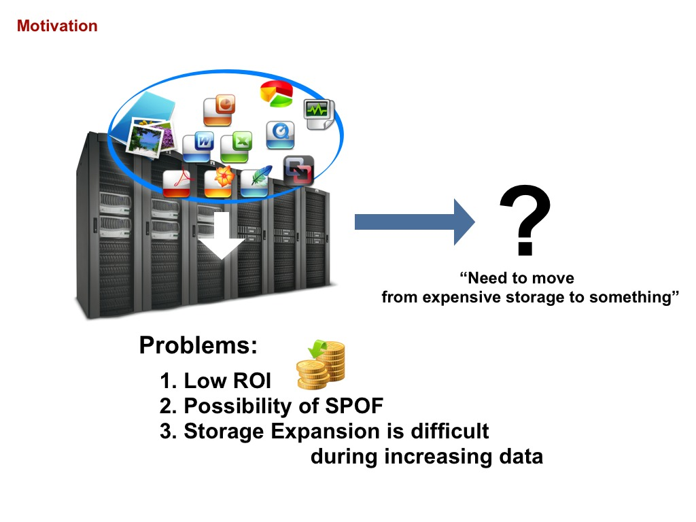

LeoFS Overview
Apr 16, 2013Our Motivation
We found storage problems in our company, A lot of services depended on Expensive Storages which is stored any unstructured data such as images, documents and so on.
We should resolve 3-problems:
- LowROI:
- Low budget services cannot pay when using expensive storages.
- Possibility of SPOF:
- Depending on the budget, It is difficult to build redundant-structure with expensive products.
- Storage expansion is difficult during increasing data:
- It cannot easily add (expand) an “Expensive Storage”.
Aim At
As the result of our try and error, we finally got satisfy our storage requirements which are 3-things:
- ONE-Huge storage:
- It’s so called storage platform.
- Non-Stop storage:
- The storage-system is requested from a lot of web services, which require is always running.
- Specialized in the Web:
- All web-services need to easily communicate with the storage-asystem. So we decided that provide NOT FUSE but REST-API over HTTP. Using FUSE is depending on specific storage, so it cannot definitely scale.
LeoFS Overview
LeoFS is able to store various unstructured-data such as photo, document, movie, log-data, and so on. LeoFS already covers from small-size files to large-size files. We aim to realize A Storage Platform in the cloud.
What we’re going to do is provide S3-API in order to build a storage platform because S3-API has provided any PG-lang clients, GUI clients, and so on. Also, they’re able to fluently communicate with LeoFS.
It needs 3-things that we have been building storage platform in our company in centralized LeoFS:
- High cost performance ratio
- High reliability
- High scalability
LeoFS consists of 3-functions - Storage, Gateway and Manager which depend on Erlang.
- Gateway
- Gateway handle http-request/response from any clients when using REST-API OR S3-API and Gateway is already built in object-cache mechanism.
- Storage
- Storage handle GET, PUT and DELETE objects as well as metadata, Also Storage has replicator, recoverer and queueing mechanism for keep running and keep consistency.
- Manager
- Manager, which always monitors gateway-nodes and storage-nodes. Main monitoring status are node-status and RING’s checksum for keep running and keep consistency.
LeoFS’s system layout is very simple. LeoFS does not has master server, so there is NO-SPOF. Also, LeoFS already provided SNMP-Agent. You're able to easily monitor LeoFS with monitoring-tools such as Nagios and Zabbix.
Inside LeoFS
Mutual function set of loosely connect with Erlang’s RPC as well as the internal storage-cluster.
LeoFS Gateway
LeoFS-Gateway consists of Stateless Proxy and Object Cache. You can easily increase gateway-nodes during high-load. We chose Cowboy as Gateway’s HTTP-Server, because we expected HIGH-Performance.
It already provide RestAPI and S3-API. They are simpler APIs. it requests to a storage node when inquiring RING, which is based on consistent-hashing.
Also, Object-cache mechanism (hierarchical cache) realizes reduction of traffic between Gateway and Storage.
LeoFS Storage
LeoFS-Storage consists of storage-engine, object-replicator, object-repairer, message queuing, and so on. Also, each storage-engine’s worker consists of metadata(s) and object-container(s) which is log-structured file.
A file (a raw data) is replicated to other nodes up to defined a number of replicas as well as metadata.
LeoFS’s data structure has 3-layers. Metadata consists of filename, file-size, checksum, and so on. An actual object is retrieved with file-name, file-size and offset. Needle is LeoFS’s original file format. A needle consists of metadata, an actual-file and footer. It’s able to recover metadata from a needle.
An object container consists of super-block and any needles.
- In case of retrieving an object from the storage:
- Storage's engine retrieves a metadata from the metadata-storage
- Retrieves an object from the object-container when using file-size and container’s offset
- In case of inserting an object into the storage:
- First, Storage's engine inserts a metadata into the metadata-storage
- Appends an object into the object storage container
This mechanism occurs side-effects. Storage's engines sometimes need to remove unnecessary objects as well as metadata. LeoFS has been taking a measure for less an effect of compaction, which is phased-compaciton. We’re considering to support auto-compaction.
LeoFS Manager
Manager distributes RING and Storage cluster’s members. It always monitors Node status and RING status, because LeoFS is required to realize high availability.
Also, Manager provides that it’s able to easily operation methods (suspend/resume/detach/whereis etc) for Gateway and Storage and provide RING to Gateway and Storage, so “LeoFS-manager” manages “RING”. If it found incorrect RING, it fixes RING’s consistency. If Storage found that, it notify that to Manager. Eventually, the problem is resolved by Manager.
Wrap Up
What we're really focused on is high cost performance ratio, high reliability and high scalability in order to realize to build a storage platform in our company. It will not succeed, even if one of them is lacking, I believe.